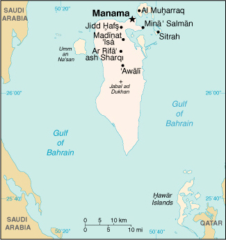

|
Bahrain | |
| Introduction Geography People Government Economy Communications Transportation Military Transnational Issues | ||
|  | ||
| Bahrain | Introduction | Top of Page |
| Background: | Bahrain's small size and central location among Persian Gulf countries require it to play a delicate balancing act in foreign affairs among its larger neighbors. Possessing minimal oil reserves, Bahrain has turned to petroleum processing and refining, and has transformed itself into an international banking center. The new amir is pushing economic and political reforms, and has worked to improve relations with the Shi'a community. In 2001, the International Court of Justice awarded the Hawar Islands, long disputed with Qatar, to Bahrain. |
| Bahrain | Geography | Top of Page |
| Location: | Middle East, archipelago in the Persian Gulf, east of Saudi Arabia |
| Geographic coordinates: | 26 00 N, 50 33 E |
| Map references: | Middle East |
| Area: |
total:
620 sq km
land: 620 sq km water: 0 sq km |
| Area - comparative: | 3.5 times the size of Washington, DC |
| Land boundaries: | 0 km |
| Coastline: | 161 km |
| Maritime claims: |
contiguous zone:
24 NM
continental shelf: extending to boundaries to be determined territorial sea: 12 NM |
| Climate: | arid; mild, pleasant winters; very hot, humid summers |
| Terrain: | mostly low desert plain rising gently to low central escarpment |
| Elevation extremes: |
lowest point:
Persian Gulf 0 m
highest point: Jabal ad Dukhan 122 m |
| Natural resources: | oil, associated and nonassociated natural gas, fish, pearls |
| Land use: |
arable land:
1%
permanent crops: 1% permanent pastures: 6% forests and woodland: 0% other: 92% (1993 est.) |
| Irrigated land: | 10 sq km (1993 est.) |
| Natural hazards: | periodic droughts; dust storms |
| Environment - current issues: | desertification resulting from the degradation of limited arable land, periods of drought, and dust storms; coastal degradation (damage to coastlines, coral reefs, and sea vegetation) resulting from oil spills and other discharges from large tankers, oil refineries, and distribution stations; no natural fresh water resources so that groundwater and sea water are the only sources for all water needs |
| Environment - international agreements: |
party to:
Biodiversity, Climate Change, Desertification, Hazardous Wastes, Law of the Sea, Ozone Layer Protection, Wetlands
signed, but not ratified: none of the selected agreements |
| Geography - note: | close to primary Middle Eastern petroleum sources; strategic location in Persian Gulf which much of Western world's petroleum must transit to reach open ocean |
| Bahrain | People | Top of Page |
| Population: |
645,361
note: includes 228,424 non-nationals (July 2001 est.) |
| Age structure: |
0-14 years:
29.6% (male 96,697; female 94,330)
15-64 years: 67.43% (male 257,360; female 177,839) 65 years and over: 2.97% (male 9,721; female 9,414) (2001 est.) |
| Population growth rate: | 1.73% (2001 est.) |
| Birth rate: | 20.07 births/1,000 population (2001 est.) |
| Death rate: | 3.92 deaths/1,000 population (2001 est.) |
| Net migration rate: | 1.1 migrant(s)/1,000 population (2001 est.) |
| Sex ratio: |
at birth:
1.03 male(s)/female
under 15 years: 1.03 male(s)/female 15-64 years: 1.45 male(s)/female 65 years and over: 1.03 male(s)/female total population: 1.29 male(s)/female (2001 est.) |
| Infant mortality rate: | 19.77 deaths/1,000 live births (2001 est.) |
| Life expectancy at birth: |
total population:
73.2 years
male: 70.81 years female: 75.67 years (2001 est.) |
| Total fertility rate: | 2.79 children born/woman (2001 est.) |
| HIV/AIDS - adult prevalence rate: | 0.15% (1999 est.) |
| HIV/AIDS - people living with HIV/AIDS: | NA |
| HIV/AIDS - deaths: | NA |
| Nationality: |
noun:
Bahraini(s)
adjective: Bahraini |
| Ethnic groups: | Bahraini 63%, Asian 19%, other Arab 10%, Iranian 8% |
| Religions: | Shi'a Muslim 70%, Sunni Muslim 30% |
| Languages: | Arabic, English, Farsi, Urdu |
| Literacy: |
definition:
age 15 and over can read and write
total population: 85.2% male: 89.1% female: 79.4% (1995 est.) |
| Bahrain | Government | Top of Page |
| Country name: |
conventional long form:
State of Bahrain
conventional short form: Bahrain local long form: Dawlat al Bahrayn local short form: Al Bahrayn former: Dilmun |
| Government type: | constitutional monarchy |
| Capital: | Manama |
| Administrative divisions: |
12 municipalities (manatiq, singular - mintaqah); Al Hadd, Al Manamah, Al Mintaqah al Gharbiyah, Al Mintaqah al Wusta, Al Mintaqah ash Shamaliyah, Al Muharraq, Ar Rifa' wa al Mintaqah al Janubiyah, Jidd Hafs, Madinat Hamad, Madinat 'Isa, Juzur Hawar, Sitrah
note: all municipalities administered from Manama |
| Independence: | 15 August 1971 (from UK) |
| National holiday: | National Day, 16 December (1971); note - 15 August 1971 is the date of independence from the UK, 16 December 1971 is the date of independence from British protection |
| Constitution: | adopted late December 2000 (new constitution calls for a partially elected legislature, a constitutional monarchy, and an independent judiciary) |
| Legal system: | based on Islamic law and English common law |
| Suffrage: | none |
| Executive branch: |
chief of state:
Amir HAMAD bin Isa Al Khalifa (since 6 March 1999); Heir Apparent Crown Prince SALMAN bin Hamad (son of the monarch, born 21 October 1969)
head of government: Prime Minister KHALIFA bin Salman Al Khalifa (since NA 1971) cabinet: Cabinet appointed by the monarch elections: none; the monarch is hereditary; prime minister appointed by the monarch |
| Legislative branch: | unicameral National Assembly was dissolved 26 August 1975 and legislative powers were assumed by the Cabinet; appointed Advisory Council established 16 December 1992; the National Action Charter created a bicameral legislature on 23 December 2000; approved by referendum of 14 February 2001 |
| Judicial branch: | High Civil Appeals Court |
| Political parties and leaders: | political parties prohibited |
| Political pressure groups and leaders: | Shi'a activists fomented unrest sporadically 1994-97, demanding the return of an elected National Assembly and an end to unemployment; several small, clandestine leftist and Islamic fundamentalist groups are active |
| International organization participation: | ABEDA, AFESD, AL, AMF, ESCWA, FAO, G-77, GCC, IBRD, ICAO, ICC, ICRM, IDB, IFC, IFRCS, IHO, ILO, IMF, IMO, Inmarsat, Intelsat, Interpol, IOC, ISO (correspondent), ITU, NAM, OAPEC, OIC, OPCW, UN, UNCTAD, UNESCO, UNIDO, UPU, WFTU, WHO, WIPO, WMO, WTrO |
| Diplomatic representation in the US: |
chief of mission:
Ambassador (vacant)
chancery: 3502 International Drive NW, Washington, DC 20008 telephone: [1] (202) 342-0741 FAX: [1] (202) 362-2192 consulate(s) general: New York |
| Diplomatic representation from the US: |
chief of mission:
Ambassador Johnny YOUNG
embassy: #979, Road 3119 (next to Al-Ahli Sports Club), Block 321, Zinj District, Manama mailing address: American Embassy Manama, PSC 451, FPO AE 09834-5100; international mail: American Embassy, Box 26431, Manama telephone: [973] 273-300 FAX: [973] 272-594 |
| Flag description: | red with a white serrated band (eight white points) on the hoist side |
| Bahrain | Economy | Top of Page |
| Economy - overview: | In Bahrain, petroleum production and refining account for about 60% of export receipts, 60% of government revenues, and 30% of GDP. With its highly developed communication and transport facilities, Bahrain is home to numerous multinational firms with business in the Gulf. Bahrain is dependent on Saudi Arabia for oil revenue granted as aid. A large share of exports consists of petroleum products made from imported crude. Construction proceeds on several major industrial projects. Unemployment, especially among the young, and the depletion of both oil and underground water resources are major long-term economic problems. |
| GDP: | purchasing power parity - $10.1 billion (2000 est.) |
| GDP - real growth rate: | 5% (2000 est.) |
| GDP - per capita: | purchasing power parity - $15,900 (2000 est.) |
| GDP - composition by sector: |
agriculture:
1%
industry: 46% services: 53% (1996 est.) |
| Population below poverty line: | NA% |
| Household income or consumption by percentage share: |
lowest 10%:
NA%
highest 10%: NA% |
| Inflation rate (consumer prices): | 2% (2000 est.) |
| Labor force: |
295,000 (1998 est.)
note: 44% of the population in the 15-64 age group is non-national (July 1998 est.) |
| Labor force - by occupation: | industry, commerce, and service 79%, government 20%, agriculture 1% (1997 est.) |
| Unemployment rate: | 15% (1998 est.) |
| Budget: |
revenues:
$1.8 billion
expenditures: $2.2 billion, including capital expenditures of $NA (2001 est.) |
| Industries: | petroleum processing and refining, aluminum smelting, offshore banking, ship repairing; tourism |
| Industrial production growth rate: | 2% (2000 est.) |
| Electricity - production: | 6.185 billion kWh (1999) |
| Electricity - production by source: |
fossil fuel:
100%
hydro: 0% nuclear: 0% other: 0% (1999) |
| Electricity - consumption: | 5.752 billion kWh (1999) |
| Electricity - exports: | 0 kWh (1999) |
| Electricity - imports: | 0 kWh (1999) |
| Agriculture - products: | fruit, vegetables; poultry, dairy products; shrimp, fish |
| Exports: | $5.8 billion (f.o.b., 2000) |
| Exports - commodities: | petroleum and petroleum products 61%, aluminum 7% |
| Exports - partners: | India 14%, Saudi Arabia 5%, US 5%, UAE 5%, Japan 4%, South Korea 4% (1999) |
| Imports: | $4.2 billion (f.o.b., 2000) |
| Imports - commodities: | nonoil 59%, crude oil 41% |
| Imports - partners: | France 20%, US 14%, UK 8%, Saudi Arabia 7%, Japan 5% (1999) |
| Debt - external: | $2.7 billion (2000) |
| Economic aid - recipient: | $48.4 million (1995) |
| Currency: | Bahraini dinar (BHD) |
| Currency code: | BHD |
| Exchange rates: | Bahraini dinars per US dollar - 0.3760 (fixed rate pegged to the US dollar) |
| Fiscal year: | calendar year |
| Bahrain | Communications | Top of Page |
| Telephones - main lines in use: | 152,000 (1997) |
| Telephones - mobile cellular: | 58,543 (1997) |
| Telephone system: |
general assessment:
modern system
domestic: modern fiber-optic integrated services; digital network with rapidly growing use of mobile cellular telephones international: tropospheric scatter to Qatar and UAE; microwave radio relay to Saudi Arabia; submarine cable to Qatar, UAE, and Saudi Arabia; satellite earth stations - 2 Intelsat (1 Atlantic Ocean and 1 Indian Ocean) and 1 Arabsat (1997) |
| Radio broadcast stations: | AM 2, FM 3, shortwave 0 (1998) |
| Radios: | 338,000 (1997) |
| Television broadcast stations: | 4 (1997) |
| Televisions: | 275,000 (1997) |
| Internet country code: | .bh |
| Internet Service Providers (ISPs): | 1 (2000) |
| Internet users: | 37,500 (2000) |
| Bahrain | Transportation | Top of Page |
| Railways: | 0 km |
| Highways: |
total:
3,164 km
paved: 2,433 km unpaved: 731 km note: there is a paved causeway connecting Bahrain to Saudi Arabia (1997) |
| Waterways: | none |
| Pipelines: | crude oil 56 km; petroleum products 16 km; natural gas 32 km |
| Ports and harbors: | Manama, Mina' Salman, Sitrah |
| Merchant marine: |
total:
7 ships (1,000 GRT or over) totaling 175,609 GRT/207,652 DWT
ships by type: bulk 2, cargo 3, container 2 (2000 est.) |
| Airports: | 3 (2000 est.) |
| Airports - with paved runways: |
total:
2
over 3,047 m: 2 (2000 est.) |
| Airports - with unpaved runways: |
total:
1
1,524 to 2,437 m: 1 (2000 est.) |
| Heliports: | 1 (2000 est.) |
| Bahrain | Military | Top of Page |
| Military branches: | Ground Force, Navy, Air Force, Coast Guard, Police Force |
| Military manpower - military age: | 15 years of age |
| Military manpower - availability: | males age 15-49: 222,141 (2001 est.) |
| Military manpower - fit for military service: | males age 15-49: 121,833 (2001 est.) |
| Military manpower - reaching military age annually: | males: 5,926 (2001 est.) |
| Military expenditures - dollar figure: | $318 million (FY99) |
| Military expenditures - percent of GDP: | 5.2% (FY99) |
| Bahrain | Transnational Issues | Top of Page |
| Disputes - international: | in March of 2001, the International Court of Justice (ICJ) awarded the Hawar Islands to Bahrain and also adjusted Bahrain's maritime boundary with Qatar |
{kind=link}